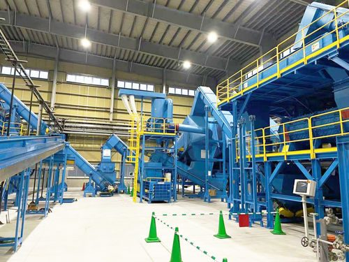
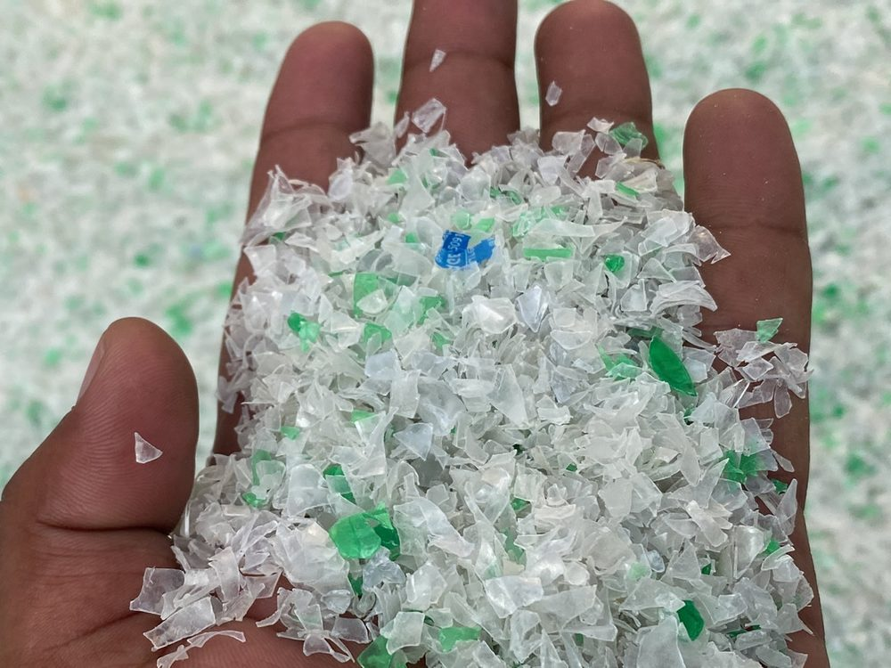
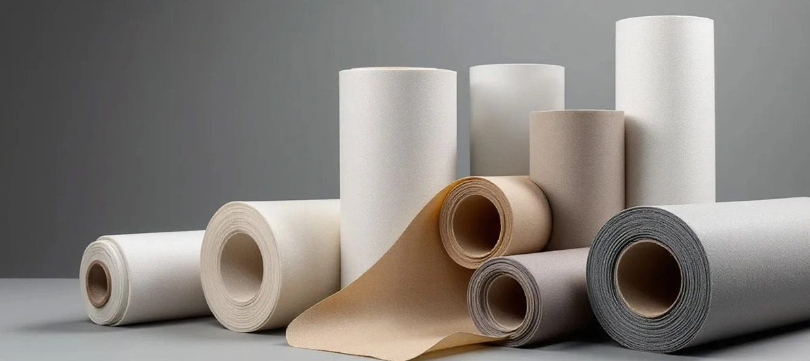
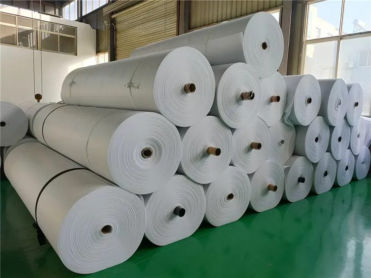

At Sarufi, we "imagine tomorrow" and work with communities to ensure a global order under the tenets of a circular economy — recycling PET bottle waste and championing economic growth through waste-to-resource and waste-to-power.
PET bottles are made from non-renewable fossil fuels and take hundreds of years to decompose if not properly recycled — polluting land, water and marine ecosystems.
Recycling PET bottles significantly cuts energy consumption compared to producing new bottles from raw materials, reducing greenhouse gas emissions.
Recycling recovers and reuses valuable resources like petroleum and natural gas, preserving them — and reducing demand for other raw materials.
PET bottles make up a significant portion of municipal solid waste. Recycling diverts them from landfills and incinerators, easing pressure on waste systems.
Recycling creates jobs in collection, sorting, processing and manufacturing — and opens a market for recycled materials across multiple industries.
Promoting PET recycling raises awareness of plastic's environmental impact and encourages individuals, businesses and communities toward sustainable practice.
Our integrated PET bottle waste recycling system maximises the value of PET waste, minimises waste generation and conserves resources — recycling, reusing and transforming bottles into valuable products.
Our recycling facility runs the full line — from feeding through to washed, dried PET flakes — engineered to maximise recovery and minimise waste at every stage.
Every bottle that enters this line leaves as raw material for something new: fibre, film, strapping or non-woven fabric — feeding industries far beyond recycling itself.

From flakes to fibre to fabric — recycled PET feeds home furnishing, construction, automotive and textile industries alike.



Toy stuffing, mattresses, pillows & bedding products
Geotextile for roads, railways & carpet underlay
Acoustic insulation & interior padding material